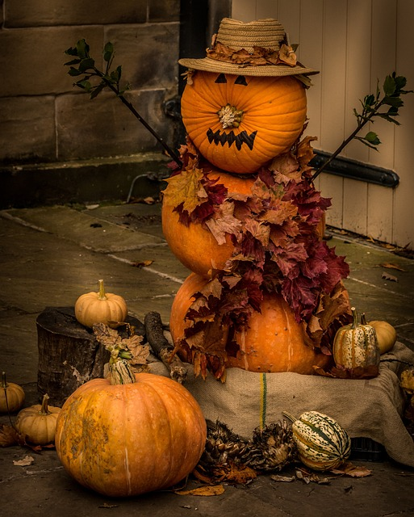
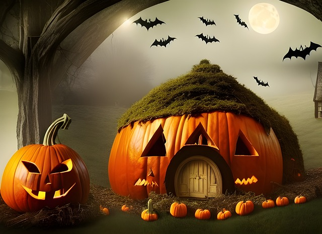
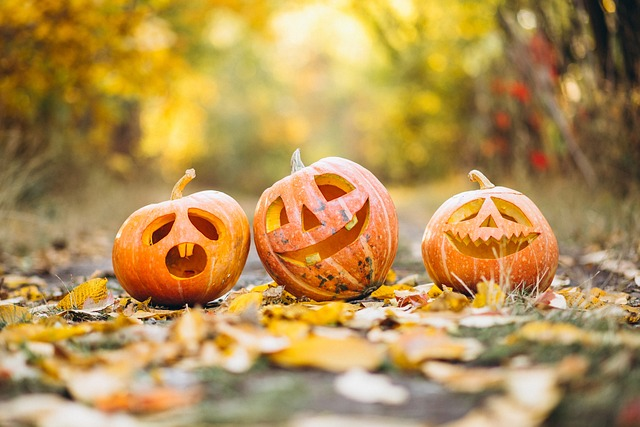
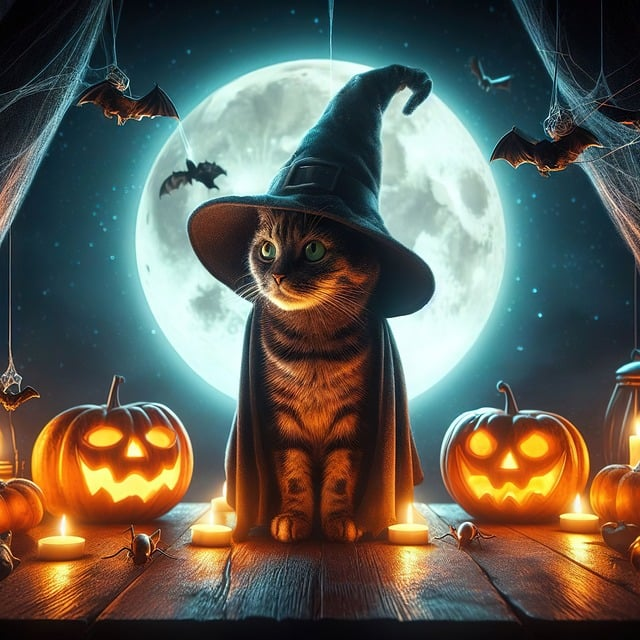
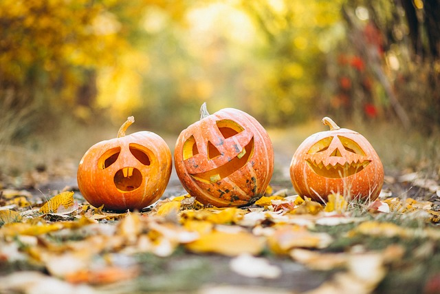
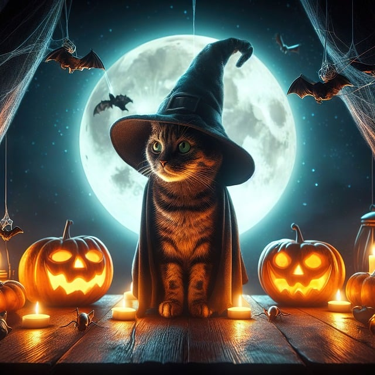
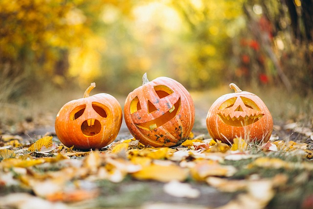
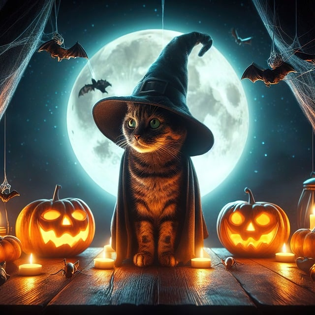

I am an image that should never change


 





Events
Zombie Fun Run
Gallup Park – October 26, 9 AM
Join the annual 5K dressed as your favorite zombie. Best costume wins a prize!
Main Street Trick-or-Treat
Downtown Ann Arbor – October 31, 4–6 PM
Local shops hand out candy to kids (and the occasional grad student).
Haunted Arb Walk
Nichols Arboretum – October 27 & 28, 8 PM
Explore eerie paths lit by lanterns, with ghost stories from student guides.
Pumpkin Carving Contest
Kerrytown Market Courtyard – October 29, Noon–3 PM
Bring your pumpkin or buy one on-site. Judging starts at 3 PM sharp.
Rocky Horror Picture Show
Michigan Theater – October 30, 11 PM
Costumes encouraged! Sing-along screening of the cult classic.